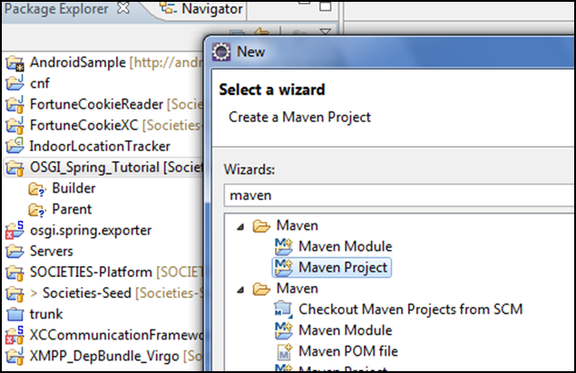
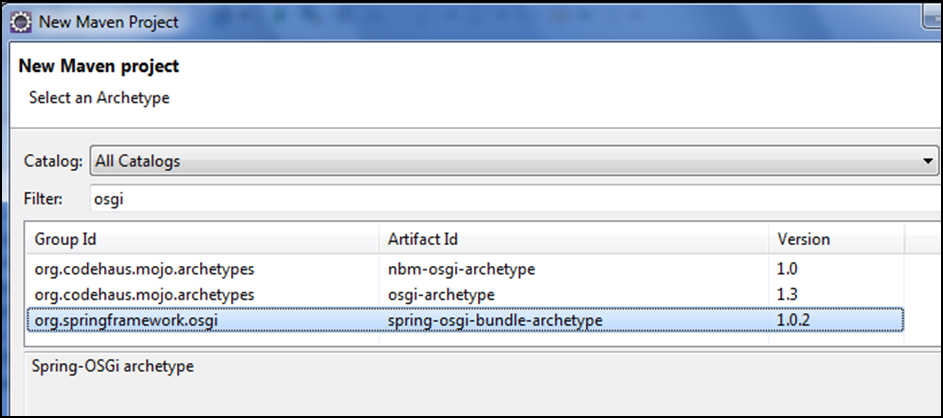
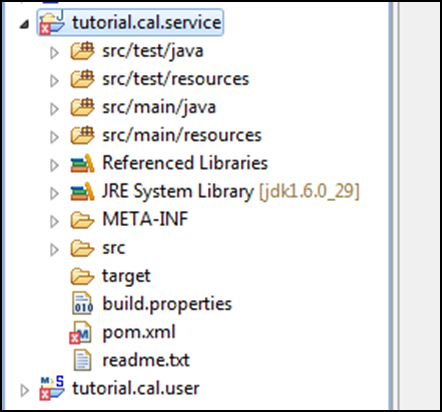
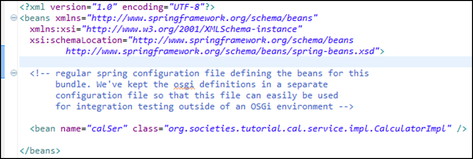

Creating new Maven-Spring-OSGI project within Eclipse using maven plug-in
In Eclipse: new → maven Project

In the new Maven project dialog, select “All Catalogs” and filter for OSGI. Eclipse will search and display the list of archetypes for OSGI project. Select the one highlighted in the screen capture.

Click next, follow the screen, supply your project-specific group-id, artefact-id and package names, then finish. You will get a new Maven project whose structure is depicted in.

Delete the content of the generated pom.xml and replace it with the content of the pom.xml file available at the GIT Code Repository, just remember to update the artifactId and groupId entries with the correct values for your project.

Edit bundle-context.xml file (located as in figure above) to define a new Spring bean (see figure below).
